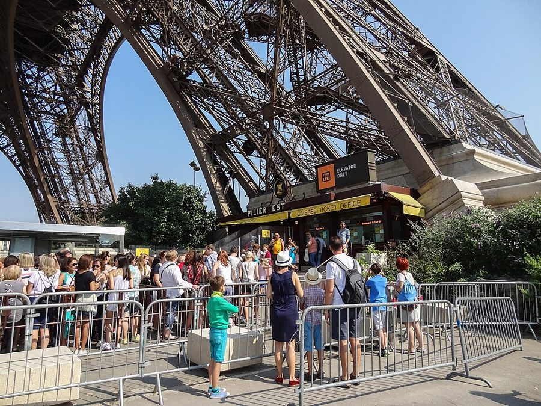
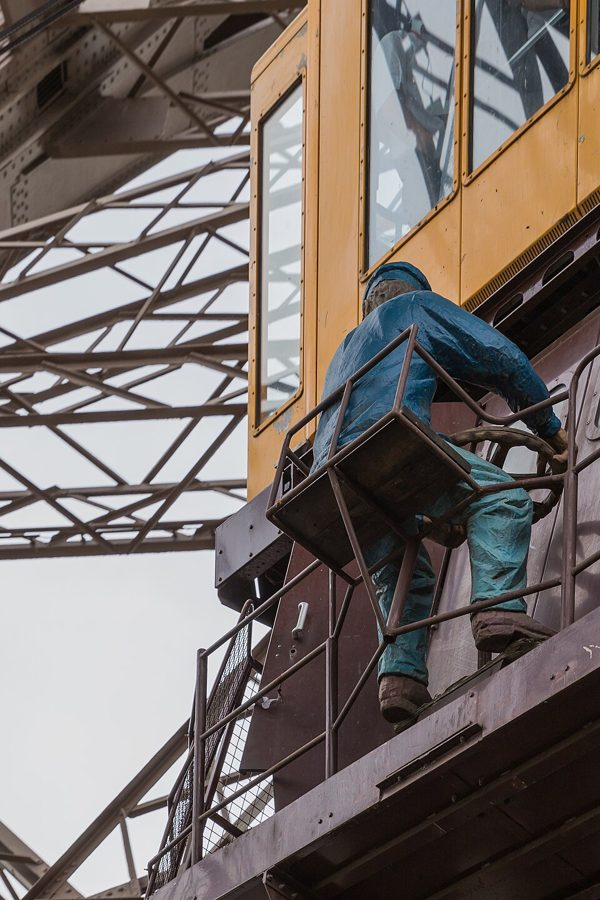
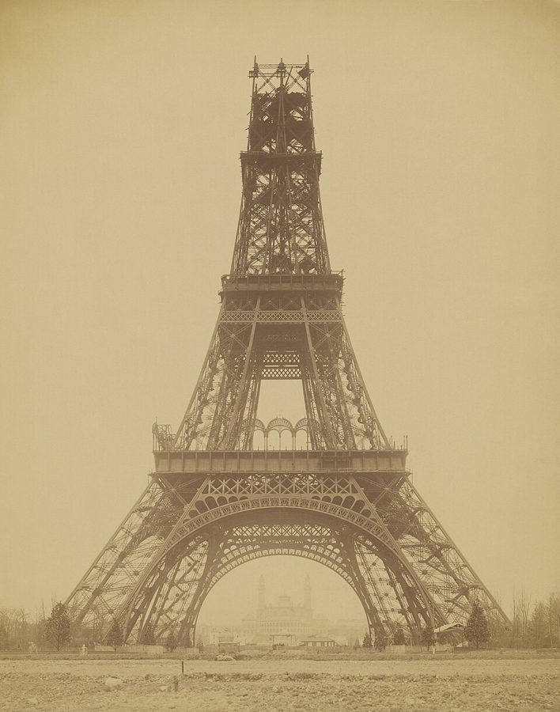
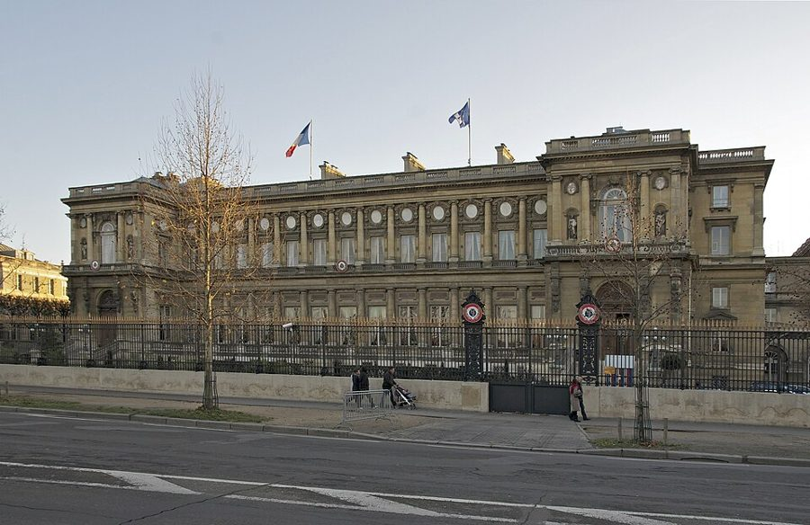
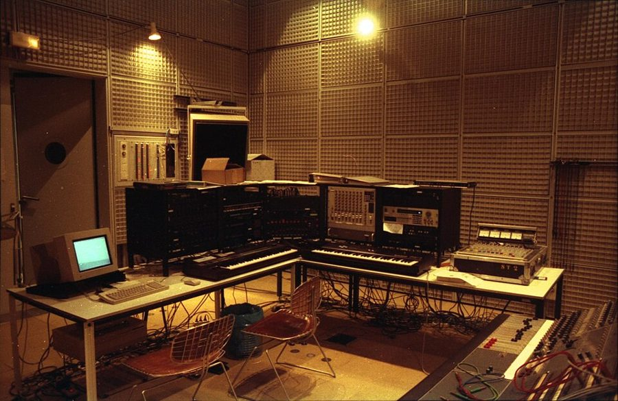
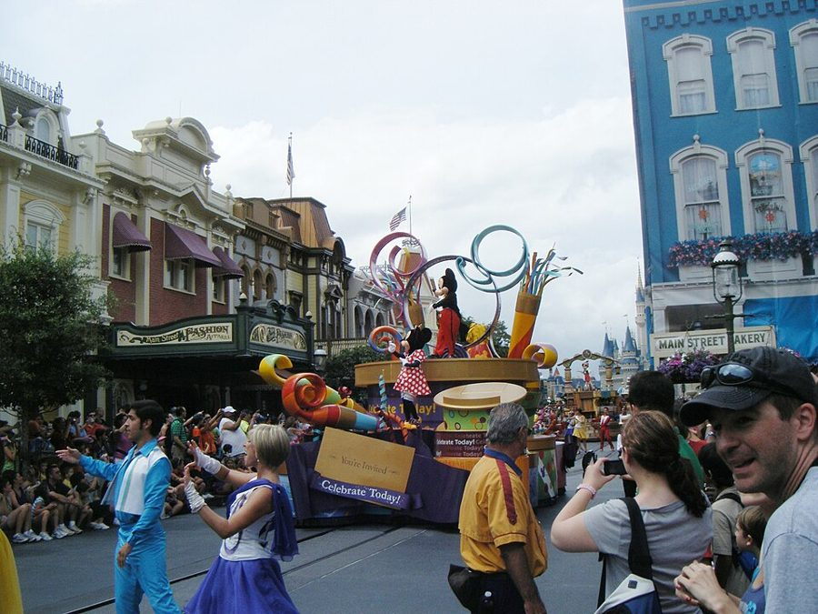

her fundamental right
… exercising her fundamental right to get …
她的基本权利
「行使基本权利」是讲宪法和人权的大词，拿来说随时上下电梯，故意大词小用，笑的是游客那种「顾客说了算」的理直气壮。
1997 年 7 月，巴黎人都出门度假了，城里差不多只剩游客和伺候游客的人。埃菲尔铁塔出了件小事：一位女游客想半路下电梯，电梯员不让，事后电梯员被开除，同事罢工，铁塔关了门。作者只用四段、八百来词，从这条新闻讲到美国人和法国人对买东西、对干活的不同想法。读的时候抓两样：作者怎样给每个细节都留两三个版本，和第 2 段起那几组左右对称的句子。

这一篇写在 1997 年夏天，文中把这件事叫作「97 年夏天的铁塔事件」，用过去时讲，罢工已经过去。它是全书最短的一篇，只有八百来词，没有分隔，排在第二部分「远方的错误」的末尾，前面是很长的 Papon 审判报道，后面第三部分从时装秀讲起。这时一家人到巴黎快两年，儿子快三岁。这一篇又是一场罢工，法国这边的同情又落在罢工者一边，可以和第 3 篇对照着读：那一篇作者问罢工的人想要什么，这一篇他换了个问法，问两边的人各自把自己当成什么。
一个电梯员不让游客半路下电梯，这么一件小事，能说明美国人和法国人的什么不同？
读的时候带着这几个问题。不用先找答案，读完回来对照「检查一下理解」。
全篇四段，没有分隔，走的是「新闻—道理—地名」的路子。第 1 段讲新闻，每个细节都故意给两三个版本，像在模仿各家报纸说法不一。第 2 段起，美国和法国分成两条线，用一组组左右对称的句子并排往下走。第 3 段给两边各起一个「主义」的名字，接着连举几个例子，从铁塔跳到外交部、现代音乐，最后缩到咖啡馆的一次握手。读译本时这里最容易觉得跳了题，其实几个例子说的是同一件事。第 4 段两条线相撞，各落在一个地名上；最后那个地名，就是全篇开头的头三个词。
作者落在哪：作者认为两边的同情不只是护着自己人：多数美国人的身份来自买的东西，法国人的来自做的工作。一边梦想什么都能买、干活的人看不见，一边梦想只管做好本行、顾客只是陪衬。他不判谁对，只给两个梦各起了地名：迪士尼世界，和七月的巴黎。
原书这一篇没有分隔，只有一节，坐下来一次就能读完。粗体是读译本时认得出的场面；下面的斜体是英文开头的几个词，打开电子书搜它就能跳到那里。读完打个勾。
按在书里出现的顺序排，标题前是节号。
法国人的年假长，1982 年起法定带薪年假是五周，很多人放在七八月。巴黎人这时成群离城，去南边的海边、西边的布列塔尼，或者乡下的老家；七八月间不少小面包店、饭馆贴出告示歇业。留下来的是游客，和靠游客吃饭的人：旅馆、咖啡馆、景点的员工。作者开头那句「往南、往西，或者总之是离开」，说的就是这种一年一度的大迁徙。
这件事当时上了美国报纸。1997 年 7 月 17 日美国《Spokesman-Review》的报道说：铁塔员工因为一名同事被开除，突然罢工，铁塔没能开门；按铁塔发言人的说法，这名员工被指对一位英国游客大喊、推搡，这位游客有眩晕症，不想坐电梯上第二层；他被开除时没有拿到遣散费。第二天《奥兰多哨兵报》的报道说，罢工当晚结束，铁塔两天来第一次开放，和书里说的「关了两天左右」对得上。书里说游客是一位有律师的成功作家，这一点本站没有查到可靠的报道，按书里的说法读。

铁塔是为 1889 年巴黎世界博览会建的，那年是法国大革命一百周年，由工程师 Gustave Eiffel 的公司设计建造，高约 300 米。塔上有三层平台，离地大约 57 米、115 米、276 米，票按上到哪一层来卖：电梯从塔脚斜着爬到二层，再换电梯上顶。书里的女游客买的是到二层的票，却想在一层下。书里还说经营铁塔的是私营企业。铁塔归巴黎市所有；据法兰西岛大区审计法院 2020 年的报告和《回声报》2005 年的报道，当时的经营方 SNTE 七成股份属于混合经济公司 SAGI，三成属于巴黎市。它是公司，不是政府部门，但说「私营」只对了一半。

作者讲电梯员怎样拦住女游客，一口气给了三个版本，最凶的一个是「像 Scorsese 电影里的 Joe Pesci 那样」扑上去。美国读者一看就懂：Joe Pesci 在 Scorsese 的黑帮片里演的角色，前一秒还在说笑，下一秒就动手打人。这是作者的玩笑，不是说当时真打成那样。
法国人说 les Anglo-Saxons，指的不是中世纪的日耳曼部族，而是说英语的英国人和美国人，常常连在一起说，口气里多少带点不以为然：英美式的自由市场、英美式的生活方式。书里先是一句「美国人？不，英国人！」，接着说法国报纸最后干脆叫她「盎格鲁-撒克逊人」，就是拿这个笼统的叫法开玩笑。第 6 篇也出现过这个词：法国人怕被拖进一种「盎格鲁-撒克逊式」的经济。
奥赛码头（quai d’Orsay）是塞纳河左岸的一段河堤，法国外交部就在这里，一座 19 世纪中叶落成的大楼。法国人和外国记者常用「奥赛码头」代指外交部，像用「白宫」代指美国总统府。作者说这里的外交官做出的外交政策极其精妙，却对楼外的任何人都毫无影响，是挖苦的夸张。

IRCAM 是法文「声学与音乐研究协调所」的缩写，作曲家 Pierre Boulez 受总统蓬皮杜之邀创办并领导，1977 年开馆，属于蓬皮杜中心，主体在中心旁边一座广场的地下。那里的作曲家和工程师一起用电脑和电子设备做新音乐。作者说它资助的音乐「到目前为止没人听过」，是玩笑：IRCAM 有自己的音乐会，作者是在拿现代音乐的冷门开涮。

迪士尼世界（Walt Disney World）在美国佛罗里达，1971 年开园，是迪士尼最大的度假区。园里的员工有统一的扮相，不少人穿着米老鼠之类的玩偶服；魔法王国园区底下还有员工专用的地下通道，送货、换班都不从游客眼前过。作者说美国人梦想一个干活的人「要么藏起来，要么扮成非人」的地方，指的就是这些。1992 年巴黎东郊也开了一座迪士尼乐园，那是另一个故事。

只收中文译文多半传不出原味的地方：熟词生义、反话和挖苦、典故、夹在英文里的法文。读译本读到觉得别扭、不知道作者在说什么时，来这里找那一节的；斜体小字是原句里的几个英文词，在电子书里搜它就能找到原文。
这一篇停在 1997 年夏天的一场小罢工。下面接着讲铁塔后来怎样。每条都写了核对日期，这类内容过一两年就会变。
书里说经营铁塔的公司是私营企业。2005 年，SNTE 的合同到期，巴黎市没有续约，另成立一家混合经济公司 SETE，由市政府控股，2006 年 1 月 1 日起接手铁塔的经营。2016 年 SETE 又改为地方公共公司（société publique locale），股东只能是地方政府；按 SETE 自己的资料，现在巴黎市持股 99%，大巴黎都市区 1%。核对于 2026-10。依据：《回声报》2005 年 5 月报道，法兰西岛大区审计法院 2020 年、2025 年关于 SETE 的报告，SETE 官网的机构介绍。
2018 年 8 月初，铁塔员工罢工两天，抗议新的分流办法：网上预约和现场买票的人分走不同的电梯，现场排的队长得吓人。2024 年 2 月 19 日起又罢工，铁塔关了六天，25 日才重开，工会说经营方高估了门票收入、低估了维修开销，塔身锈蚀严重。核对于 2026-10。依据：路透社、France 24 2018 年 8 月 1–2 日报道，路透社 2024 年 2 月 24 日、《卫报》2024 年 2 月 25 日报道。
Most Americans draw their identities from the things they buy, while the French draw theirs from the jobs they do.— §1，第 2 段中间，全篇的判断。本站译：多数美国人从买的东西里得到自己的身份，法国人则从做的工作里得到。
前后两半对称：draw … from 用了两次，theirs 替掉 their identities，the things they buy 对 the jobs they do。留意一处不对称：美国人那边有 Most（多数），法国人那边没有。读中文时很容易把「多数」丢掉，读成「美国人都……」，作者没说得那么满。
This place, come to think of it, is called Paris in July.— §1，全篇最后一句。本站译：这个地方，这么一想，就叫七月的巴黎。
前一句刚说「这个地方叫迪士尼世界」，这一句用同一个句式，中间插进 come to think of it（这么一想），装作是临时想到的。Paris in July 正是全篇开头的头三个词，首尾一扣。中文译得出意思，但句式的重复、插入语那一下停顿、和开头的呼应，很难一起留住。
先在心里答，再点开。答错的那题，回书里把对应那一节再读一遍。
从书里的写法看，各方说法不一，连她是哪国人都说不清。作者把各种说法并排摆出来，不替哪一方作证，也带着调侃：他关心的不是到底谁对，而是两边的人怎么看这件事。
他们上不了塔。作者偏说他们气的是「没能被电梯员推搡」，这是反话，一句话同时笑了游客的理直气壮和电梯员的粗鲁。
两种文化在性情和观念上的差别：多数美国人从买的东西里得到身份，法国人从做的工作里得到。所谓「法国人粗鲁」和「美国人傲慢」，作者说都从这里来。
它是一位工程师造的、自成一体的作品，除了立在那里、因为造得好而被人欣赏，没有别的用处。有手艺、不用伺候顾客，正是作者说的法国人的理想。
不是你成了受重视的顾客，而是你被算作了「荣誉侍者」，成了半个同行。这是作者的玩笑，接着前面的「生产主义」说：在法国，连侍者的好感也从本行里来。
电梯员梦想一个人开着电梯上到塔顶，没有乘客；游客梦想一部自动电梯，没有电梯员。迪士尼世界是美国人的梦，什么都能买，干活的人藏起来或扮成非人；七月的巴黎是法国人的梦，人人做好本行，顾客只是被容忍的跑龙套的。
用一句话说这一篇，写给一个没读过的人。
读过又忘了，从这里想起来。挑的是这一篇最值得记住的场面和说法，不按原书顺序；每条后面是节号，想细看就回书里那一节。全书各篇的这一节都收在全书回顾。
一句话：铁塔电梯里一场口角，作者从中看出美国人靠买东西认自己，法国人靠干本行；两边的乐园，一个叫迪士尼世界，一个叫七月的巴黎。
咖啡馆的侍者终于肯跟你握手，不是把你当成了贵客，而是把你收为「荣誉侍者」：你成了半个同行。
§1铁塔一关，英美游客在塔下气坏了。作者说，他们气的是被剥夺了被电梯员粗暴对待的机会。
§1多数美国人从买的东西里得到身份，法国人从做的工作里得到。于是在美国人眼里她只是来玩的，在法国人眼里他只是在尽本分。
§1外交部做出精妙却影响不到楼外任何人的外交，IRCAM 资助至今没人听过的音乐。有本行、没顾客，在法国真有人做到了。
§1电梯员梦想独自开电梯上塔顶，游客梦想一部没有电梯员的自动电梯。两个梦一撞，就出了这件事。
§1